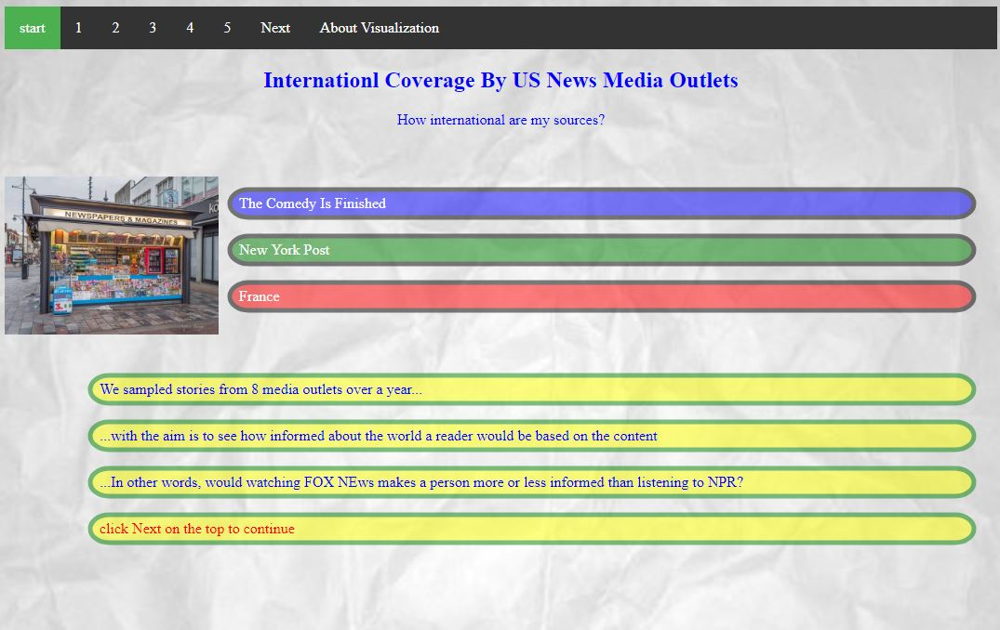
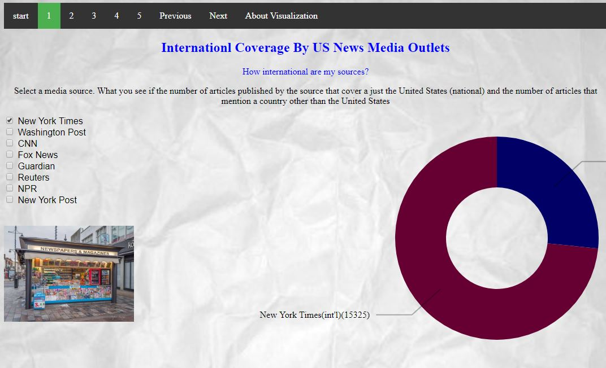
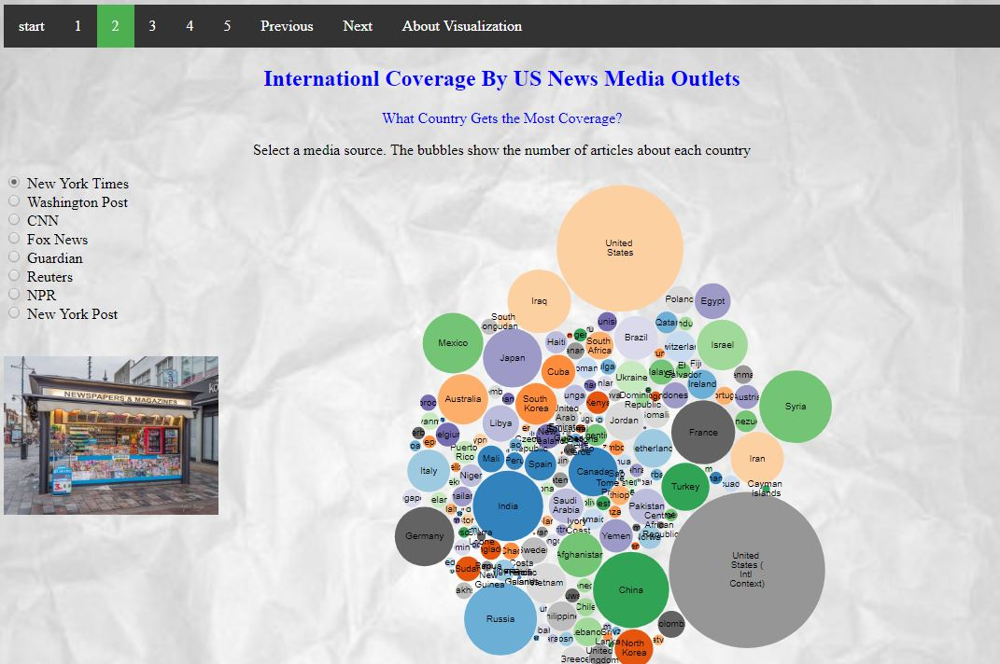
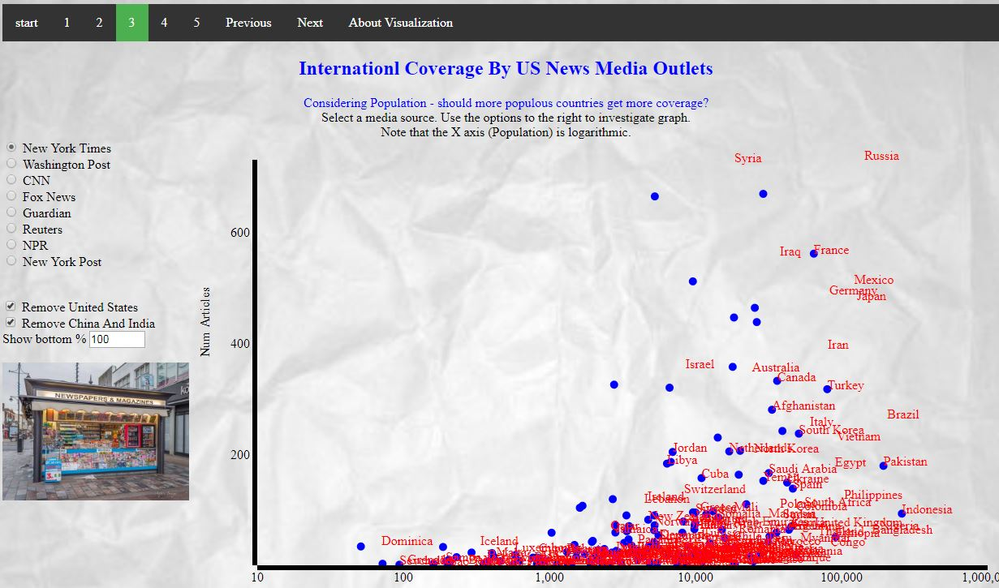
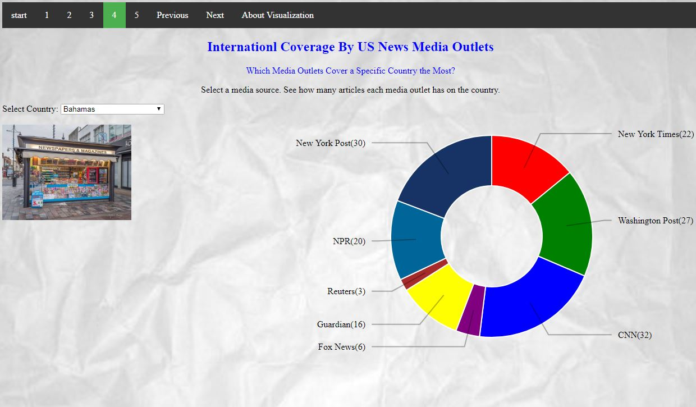
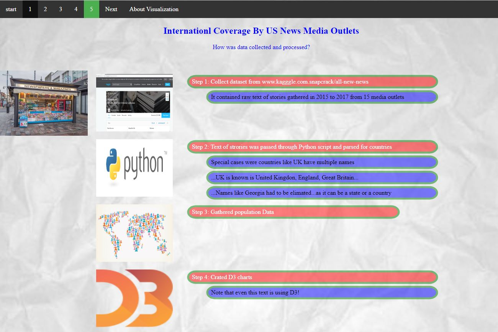
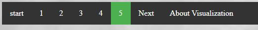

Essay Table
| Feature | Info |
|---|---|
|  | Start ScreenIntroduces the user to the visual narrative. This is an interactive slide show. Use of transistions of text for v3 is shows. Note the quickly changing news ticker box |
|  | Screen 1Show animated use of D3 pie chart. Parameters on the side (media sources like "New York Times" allows the user to control the chart. |
|  | Screen 2Use of D3 bubble chart. I was not able to get this to be animated. |
|  | Screen 3Use of D3 scatter chart (with tranisstion) and annotations. Note controls and triggers on the side that allows a user to explore the chart. Text that makes the bottom part of the chart hard to see in detail is kept on purpose to motivate user to explore. |
|  | Screen 4Another use of animated pie chart used for exploration with a combobox trigger. |
|  | Screen 5Another use of D3 transision in explaining how the data was collected. |
|  | NavigationUse of Navigation allows the use to navigate the narrative. Next, Previous as well as direct access (1,2,3...) is provided to the user. |
AuthorThis navigation was created by Tal Shaffar for the Data Visulization Class (CS498) @ University of Illinois at Urbana–Champaign. July 2018. shaffar2@illinois.edu |